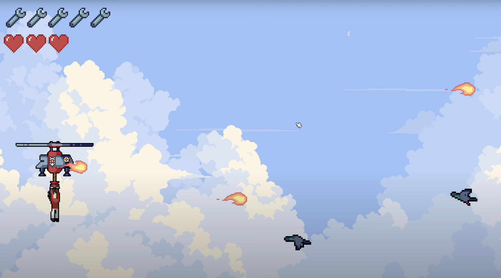
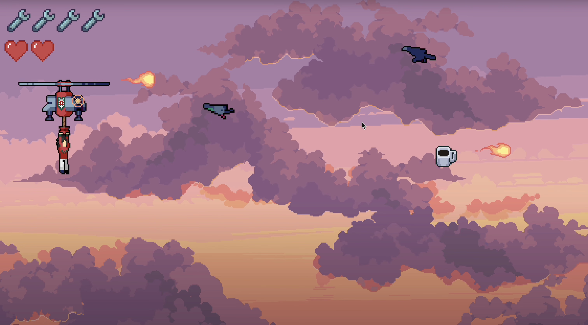
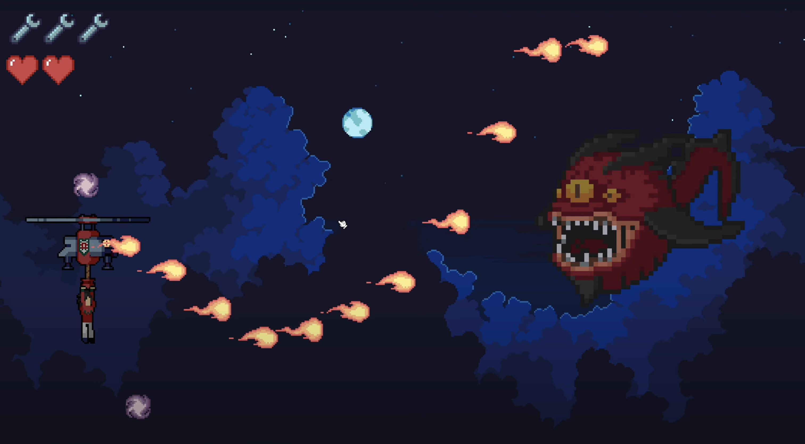
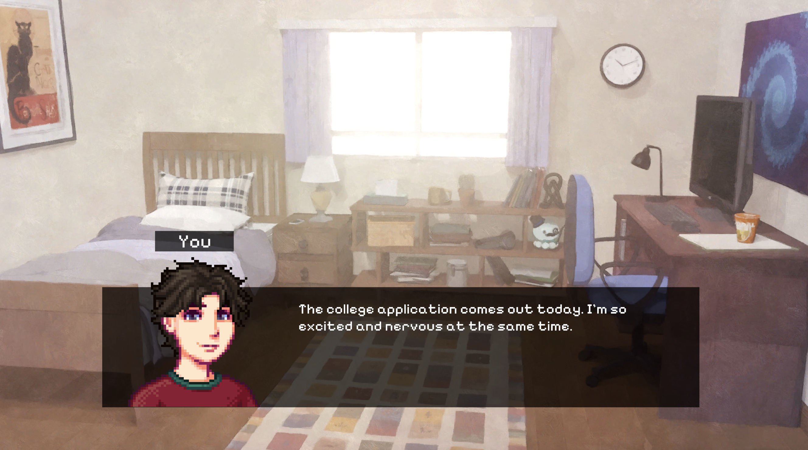
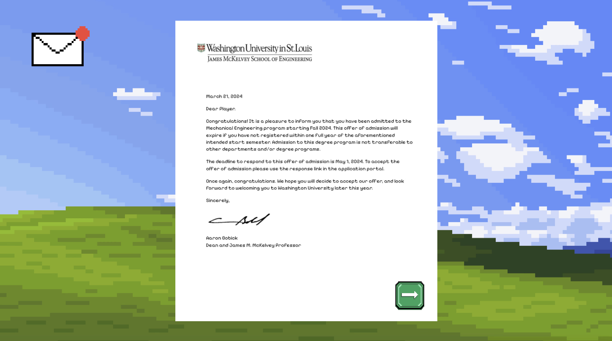
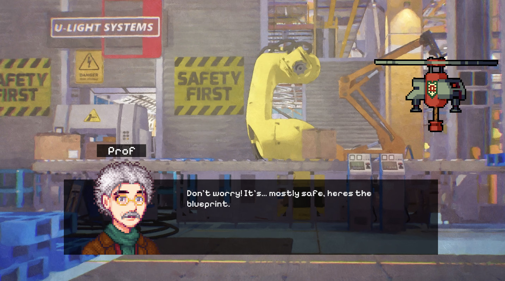

DAVID LIANG · SOLO GAME DEVELOPMENT
The Flying
Machine
A 2D pixel-art shooter about piloting a flying machine through waves of airborne enemies. Protect both the pilot and the machine as you dodge, fire back, and face the final boss.
About the Game
The Flying Machine is a single-player side-scrolling shooter where players navigate the skies, avoiding and shooting down waves of enemies. The pilot and the machine have separate hitboxes and life counters, adding another layer of strategy to every encounter.

Design Goals
Inspired by Cuphead, I wanted to create satisfying chaos. I combined sound effects, power-ups that increase bullet speed, and a smooth progression in level difficulty to keep the action engaging.
This was also my first project using parallax scrolling. Moving background layers at different speeds added depth to the skies behind the action.

Challenges
The final boss was the most challenging encounter to design. I experimented with bullet-pattern calculations and spawn frequency to make the battle demanding while keeping it balanced.
Implementing separate hitboxes and life counters for the pilot and the machine was another technical challenge. Both needed to work together throughout combat while tracking damage independently.

Story Moments



Credits
- Bird enemies, character, flying machine, and backgrounds — CraftPix
- Boss sprite — Elthen
- Bullet sprites — BDragon
- Wrench icon — Cadmium_Red
- Character portraits — Poltergeister & Jaz
- Windows background — Peakpx
- Story backgrounds — Spiral Atlas
- Resume button — Shrejkr
- Coffee icon — Yanin